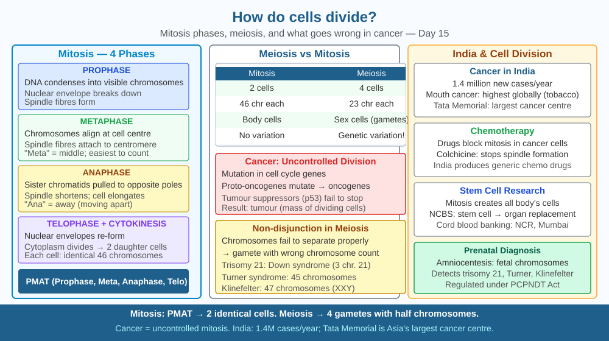

By the end of this lesson, you should be able to describe the stages of mitosis, distinguish mitosis from meiosis, and predict what happens when chromosomes fail to separate correctly.
A fertilised egg — a single cell — divides to become a 37 trillion-cell human adult. Every time a cell divides, it must copy its entire 3-billion-base-pair genome with extreme accuracy. How does it do this so reliably? And when it goes wrong, what happens?
Mitosis: Cell division for growth and repair. Produces 2 genetically identical daughter cells. - Interphase: DNA replication — 46 chromosomes → 92 chromatids (joined pairs) - Prophase: Chromosomes condense and become visible. Nuclear envelope breaks down. - Metaphase: Chromosomes align at the cell's equator (spindle apparatus forms from centrioles). - Anaphase: Spindle fibres pull chromatids to opposite poles. Sister chromatids separate. - Telophase: Nuclear envelopes reform around each set. Chromosomes decondense. - Cytokinesis: Cytoplasm divides → 2 cells, each with 46 chromosomes.
Meiosis: Cell division for sexual reproduction. Produces 4 genetically unique gametes, each with 23 chromosomes (haploid). - Two rounds of division (Meiosis I and II) - Crossing over (prophase I): maternal and paternal chromosome segments exchange → genetic diversity
Cancer: Uncontrolled mitosis. Mutations in proto-oncogenes (promote division) or tumour suppressor genes (stop division) remove cell cycle checkpoints. Cells divide without regulation → tumour.
Think of the cell cycle as a factory photocopier producing a single authorised copy before shipping:
If the photocopier jams at metaphase (spindle checkpoint fails), the factory halts. If it ignores the jam and splits anyway, one daughter gets an extra chromosome and the other gets one fewer. In a living cell, that error can trigger cancer or produce a non-viable embryo.
The SVG shows a circular cell cycle diagram divided into six wedge-shaped sectors, each labelled with a phase name and a simplified cell illustration inside it.
The largest wedge, coloured light grey, represents interphase — it takes up more than half the circle, reflecting that cells spend roughly 90 % of their cycle here; DNA strands are shown as loose threads being duplicated side by side.
Prophase shows tightly coiled chromosomes coloured dark blue; a dotted circle represents the dissolving nuclear envelope.
Metaphase shows a horizontal alignment of chromosome pairs at the centre of the cell, with red spindle fibres extending from two poles to each chromosome's centromere.
Anaphase shows the chromosome pairs pulled apart — half moving left, half moving right — with spindle fibres shortened, indicating active pulling.
Telophase and cytokinesis share the final wedge: two small nuclei reform (shown as circles) and a pinch line appears at the cell equator, giving way to two separate daughter cells at the diagram's edge.

India has approximately 1.5 million new cancer cases per year. Chemotherapy drugs target rapidly dividing cells by disrupting mitosis: paclitaxel stabilises spindle fibres so chromosomes cannot separate; colchicine disrupts tubulin polymerisation so the spindle cannot form. India's generic drug industry produces these drugs at roughly one-tenth the price of branded versions, making cancer treatment accessible across income levels.
Down syndrome (trisomy 21) — with around 23,000 affected births per year in India — results from non-disjunction in meiosis I: chromosome 21 fails to separate properly, leaving one gamete with two copies. When that gamete fuses with a normal gamete, the zygote has three copies of chromosome 21. Every step of that error maps directly onto the meiosis mechanism.
Observe onion root tips under a microscope or in a clear textbook micrograph. Onion root tips grow rapidly, meaning many cells are actively in mitosis at any given moment.
Count the number of cells visible in each phase. The vast majority will be in interphase because the S-phase (DNA replication) alone takes about 8 hours of a roughly 24-hour cycle. Prophase, metaphase, anaphase, and telophase combined take only about 2 hours.
The ratio of cells per stage directly reflects the time the cell spends there — a reliable way to measure the length of each phase without a clock. If you cannot access a microscope, draw and label a cell at each of the five stages from a textbook image and annotate which molecular event is happening inside.
Cell cycle checkpoints are molecular quality-control systems. The G1 checkpoint asks: is the cell large enough? Is DNA undamaged? The G2 checkpoint asks: was DNA replicated correctly? The spindle assembly checkpoint asks: is every chromosome properly attached to a spindle fibre before separation begins?
The tumour suppressor protein p53 — called the "guardian of the genome" — halts the cycle when it detects DNA damage and triggers either repair or apoptosis (programmed cell death). p53 is mutated in roughly 50 % of all human cancers. AIIMS and Tata Memorial Centre in Mumbai run India's leading cancer research programmes, much of which focuses on restoring p53 function in tumour cells.
Predict: If a drug could reactivate p53 specifically inside cancer cells without affecting healthy cells, what would you expect to happen to the tumour? What would be the risk if p53 were accidentally activated in rapidly dividing healthy tissue — like intestinal lining?
What process allows body cells to divide and produce two identical daughter cells?
Correct answer: B
Why is knowing the step-by-step mechanism of cell division more useful than just knowing cells divide?
Correct answer: A
If chromosomes failed to separate correctly during cell division, what would you predict?
Correct answer: B
A scientist treats a culture of dividing cells with a drug that freezes the spindle assembly checkpoint — cells can no longer detect whether chromosomes are correctly attached before anaphase begins.
Describe step by step what would happen to the chromosomes in the first division after the drug is applied. Predict the chromosome count in the resulting daughter cells. Then explain why this situation resembles what happens in cancer, and propose one measurable observation — using only a light microscope — that would confirm chromosomes were distributed incorrectly.
Meiosis produces four genetically unique gametes through crossing over — segments of maternal and paternal chromosomes physically swap during prophase I. The molecular machine that performs this swap, a protein complex called the synaptonemal complex, assembles a structure that runs along the entire length of each chromosome pair like a molecular zipper. This zipper holds homologous chromosomes close enough together for enzymes to cut both strands simultaneously and rejoin them in a switched arrangement. Evolution invented precise, programmable DNA cutting and stitching long before any human geneticist attempted gene editing — CRISPR-Cas9, the tool that won the 2020 Nobel Prize, is essentially the same concept borrowed from bacterial immune systems.
Every cell division is a full copy of 3 billion base pairs verified by multiple checkpoints — when those checkpoints fail, uncontrolled division begins, which is the root mechanism of cancer.